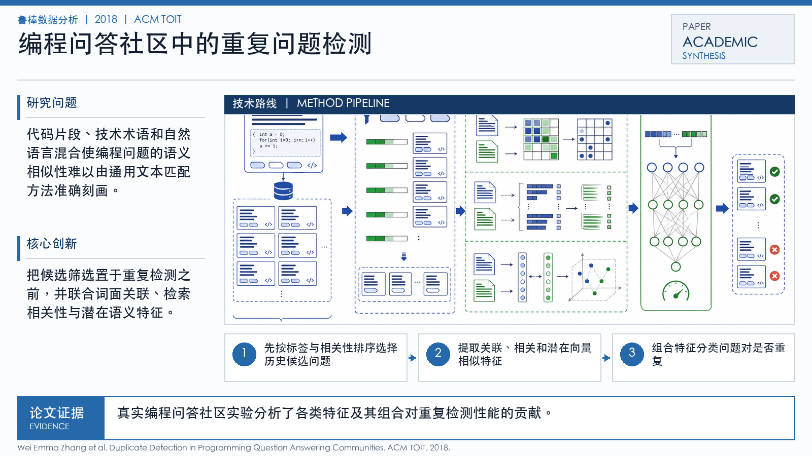

Problem
解决的问题
代码片段、技术术语和自然语言混合使编程问题的语义相似性难以由通用文本匹配方法准确刻画。
Robust Data Analytics · 2018 · ACM TOIT
Duplicate Detection in Programming Question Answering Communities
Problem
代码片段、技术术语和自然语言混合使编程问题的语义相似性难以由通用文本匹配方法准确刻画。
Value
真实编程问答社区实验分析了各类特征及其组合对重复检测性能的贡献。
Paper-grounded Academic Summary
该代表页依据原文摘要、贡献段与方法图注生成。方法视觉由 ImageGen 按论文证据逐篇绘制，中文研究问题、技术路线、创新点与实验结论采用确定性排版，以保证内容与字符准确。
打开原文 PDF
Technical Route
Innovation